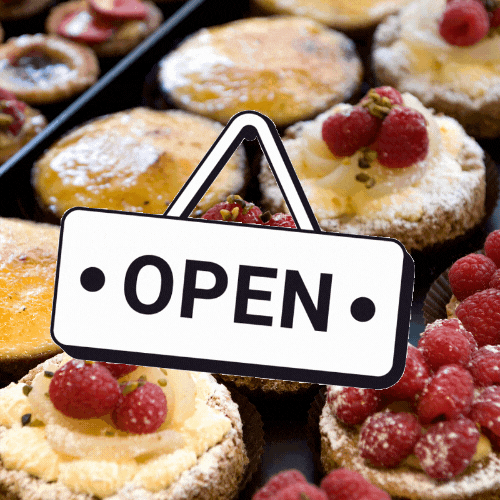

Black Goose Bistro
The Black Goose Bistro offers casual lunch and dinner fare in a hip atmosphere. The menu changes regularly to highlight the freshest ingredients.
You have fun... we'll do the cooking. Black Goose catering can handle events from snacks for bridge club to elegant corporate fundraisers.
Seeking, Massachussetts;
Monday through Thursday 11 am to 9 pm,
Friday and Saturday,
11 am to midnight
This place has the greatest food around the local area. ~ John S.
Blackgoose Bistro has absolutely blown away any doubts I had about this place. I usually don't take well to new restaraunts but they are amazing! ~ Delilah J.